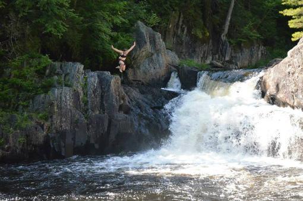
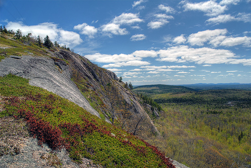
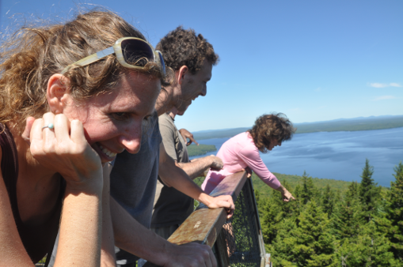
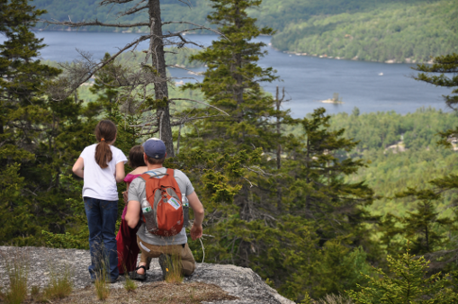

Click the elevation map to scroll to a hike (approximately) near that area of the state.
Gulf Hagas is one of our favorite places to hike (and swim!) every summer in Maine. Called "The Grand Canyon of Maine," this hike offers stupendous views and many waterfalls to admire or swim in. This Gen Rev'er took the plunge - you should too!
Chick Hill is a local hike found near Clifton. It's a short drive from the Bangor area. Hikers may ascend via a trail through the woods or an access road. There are great views from the top and lots of wild blueberries in season. Look for "Big Chick" and "Little Chick" as you drive around. You can see it while driving north on I-95 just before crossing the Bangor city line, from the hills of Brewer, from the country club in Orono, or from lots of other spots in the region.
Mt. Kineo is a special place in Maine. An observation tower sits atop cliffs of flint which jut out of Moosehead Lake. Climbing to the top affords spectacular 360° views of Moosehead Lake. Call (207) 534-9012 for information on the ferry to Mt. Kineo, which also takes passengers to the Mt. Kineo Golf Course.
Bald Mountain is a hike very close to the Bangor area, located in Dedham. It's steep but short, the views providing big payoff for not a lot of work. The west side of the peak looks over Lucerne Lake, Bangor, and out to Kahtahdin, while the east side of the peak looks over the lakes of the Ellsworth region and the peaks of Mount Dessert Island. Here lies the site of a former ski mountain, and you can still find some of the concrete footings for the ski lift if you look hard enough.
